Observable outcome: each developer can name one reusable service capability, explain how Declarative Services activates it, trace one typed PID to its effective Author or Publish configuration, classify environment values and secrets, and justify HTL, Sling Model, Model Exporter or a constrained servlet for a named consumer.
Topic summary
An OSGi service is useful when reusable queries, integrations or orchestration need one explicit owner. Declarative Services registers that capability, manages component lifecycle and resolves declared service references; an unsatisfied required reference prevents activation instead of leaving a partial object. Metatype annotations describe configuration as a typed operational contract connected to the component PID.
In AEM as a Cloud Service, supported run modes select one complete configuration per PID. Non-secret environment values and secrets enter through separate placeholders, while runtime evidence—not the source file alone—proves the effective state. HTL, a Sling Model, a Core Component or an existing Model Exporter contract should satisfy the consumer whenever possible; a servlet is the final option and must constrain selection, validation, permissions, caching and response behavior.
- Create a service only for one reusable capability needed by a real consumer.
- Let Declarative Services own lifecycle and required dependencies.
- Use typed Metatype configuration connected to a stable PID.
- Separate versioned shape, environment values and secrets.
- Verify effective configuration and component state at runtime.
- Add a constrained servlet only for a distinct HTTP contract.
30-minute agenda
| Time | Slide | Facilitation |
|---|
| 0–2 | 1 · Opening | Preview the consumer-to-service-to-surface decision path. |
| 2–5 | 2 · Service boundary | Separate view preparation from a genuinely reusable capability. |
| 5–8 | 3 · DS lifecycle | Trace registration, activation, references and runtime evidence. |
| 8–11 | 4 · Typed configuration | Connect Metatype definitions, Designate, PID and activation. |
| 11–14 | 5 · Effective PID | Resolve one complete configuration for Author plus dev. |
| 14–17 | 6 · Values and secrets | Separate Git, environment variables and secret variables. |
| 17–20 | 7 · Safe failure | Choose active, disabled or rejected behavior deliberately. |
| 20–22 | 8 · Runtime evidence | Compare local Web Console and cloud Developer Console proof. |
| 22–25 | 9 · Surface ladder | Stop at HTL, model or exporter before proposing a servlet. |
| 25–27 | 10 · Servlet boundary | Constrain resource type, selector, extension, method and operation. |
| 27–28 | 11 · Key takeaways | Summarize five consumer-driven backend decisions. |
| 28–30 | 12 · Questions | Questions from the audience only; no review exercise. |
Complete slide deck
Study each slide with its presenter notes, then copy or download the PNG.
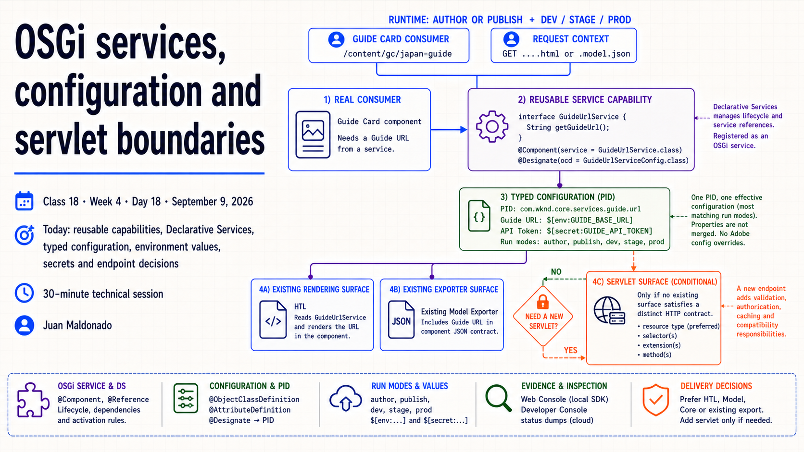
Detailed presenter notes
- Context: continue from Sling Models by giving shared backend behavior a different owner.
- Path: start with a consumer, reach one configured capability and stop at the smallest suitable output.
- Restraint: a service or servlet is not valuable merely because an annotation exists.
- Outcome: name the capability, effective configuration and delivery contract from runtime evidence.
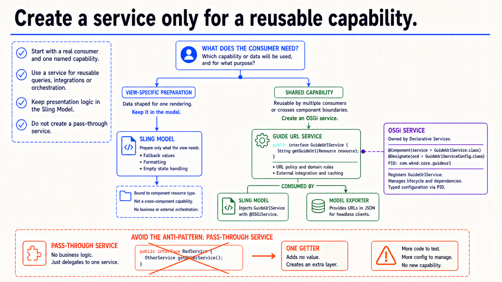
Detailed presenter notes
- Consumer first: begin with the capability or data that will be used, and by whom.
- Model: keep component-specific fallback, formatting and empty-state behavior at the view boundary.
- Service: extract shared queries, integrations or orchestration used across component boundaries.
- Anti-pattern: an interface and implementation that forward one getter create cost without a capability.
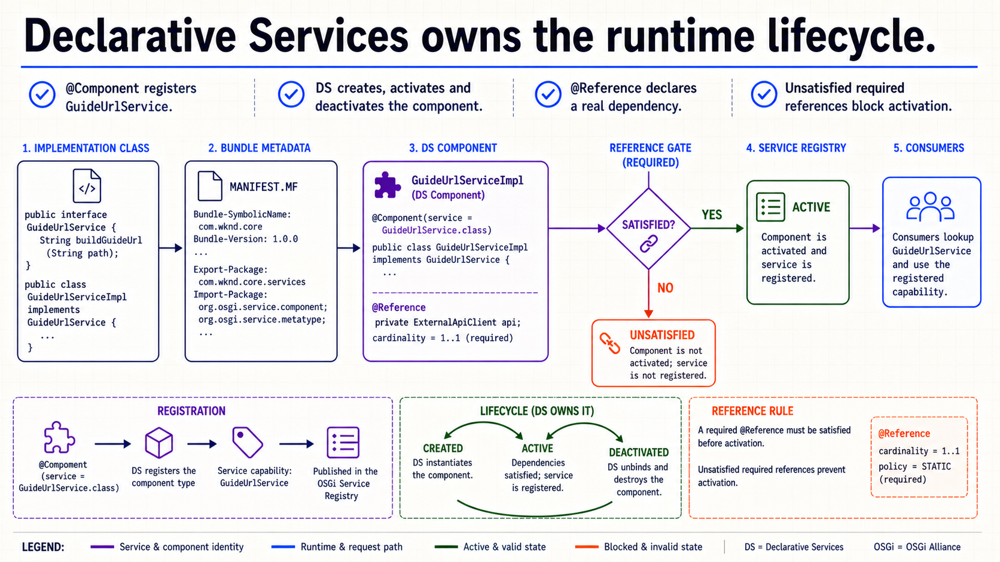
Detailed presenter notes
- Registration: build tooling turns
@Component metadata into a runtime DS component.
- Lifecycle: DS creates, activates, registers and deactivates the implementation.
- Dependency: a required unsatisfied
@Reference blocks activation.
- Evidence: Components runtime state proves more than the presence of a Java class.
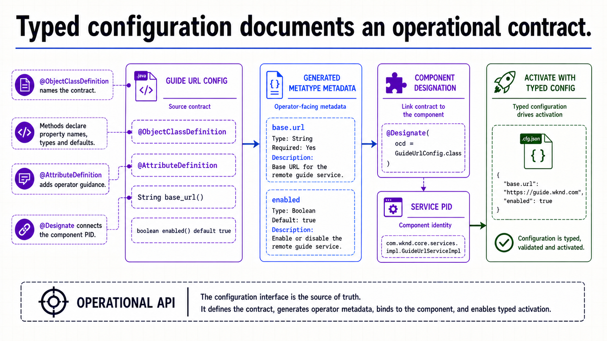
Detailed presenter notes
- Definition:
@ObjectClassDefinition groups typed configuration properties.
- Guidance:
@AttributeDefinition adds operator-facing detail when it is useful.
- Connection:
@Designate associates the component PID with that definition.
- Contract: activation consumes a typed object rather than parsing loose strings.
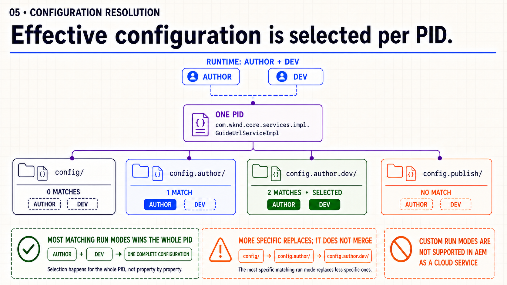
Detailed presenter notes
- Candidates: compare base, Author, Author plus dev and Publish folders for one PID.
- Selection:
config.author.dev wins because both active run modes match.
- Granularity: the selected document replaces less-specific candidates for the whole PID.
- Boundary: AEM as a Cloud Service supports defined run modes, not project-specific custom modes.
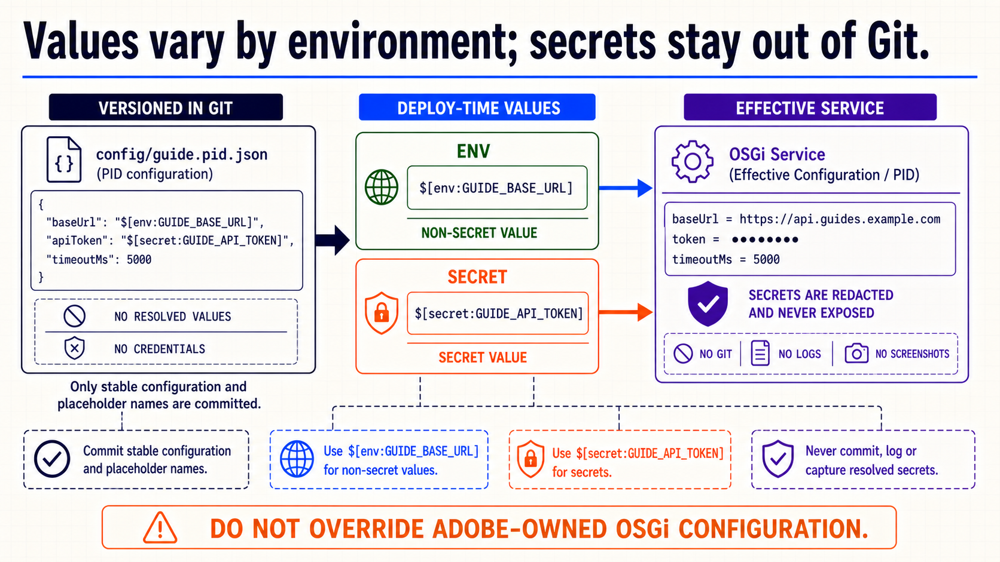
Detailed presenter notes
- Git: version the stable PID configuration and placeholder names.
- Environment: use
$[env:GUIDE_BASE_URL] for a non-secret varying value.
- Secret: use
$[secret:GUIDE_API_TOKEN] and keep its result out of evidence.
- Ownership: do not use variables to override Adobe-owned OSGi configuration.
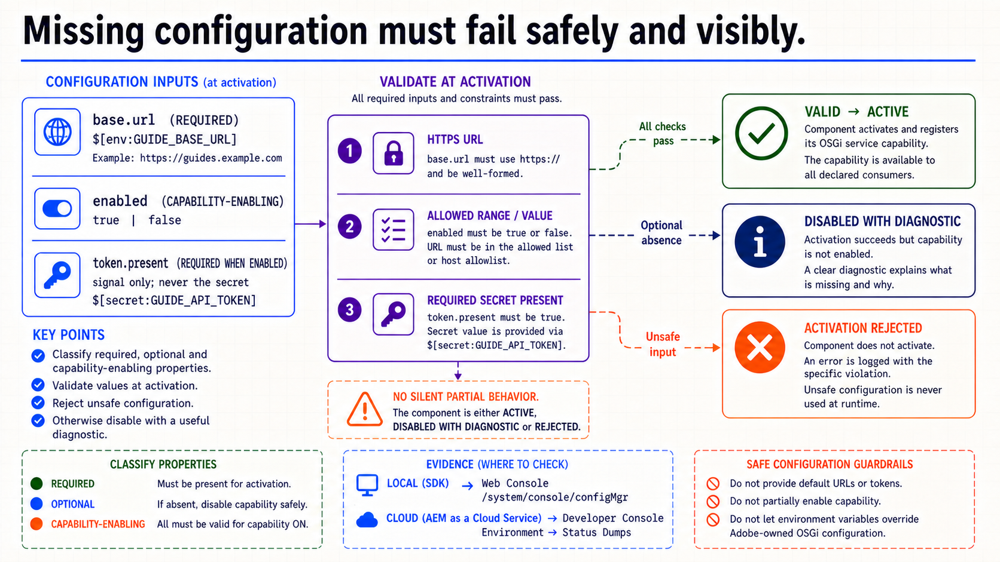
Detailed presenter notes
- Classification: distinguish required, optional and capability-enabling properties.
- Validation: check protocols, ranges, allowed values and secret presence at activation.
- Outcomes: expose active, intentionally disabled and rejected states deliberately.
- Diagnostic: explain the failure without logging secret material.
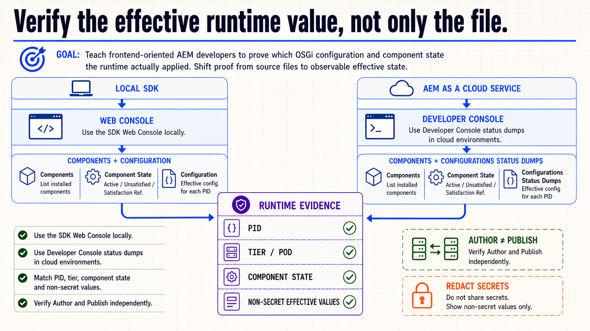
Detailed presenter notes
- Local: inspect Components and Configuration in the AEM SDK Web Console.
- Cloud: inspect Components and Configurations through Developer Console status dumps.
- Checklist: capture PID, tier or pod, component state and non-secret effective values.
- Tiers: verify Author and Publish independently when their values differ.
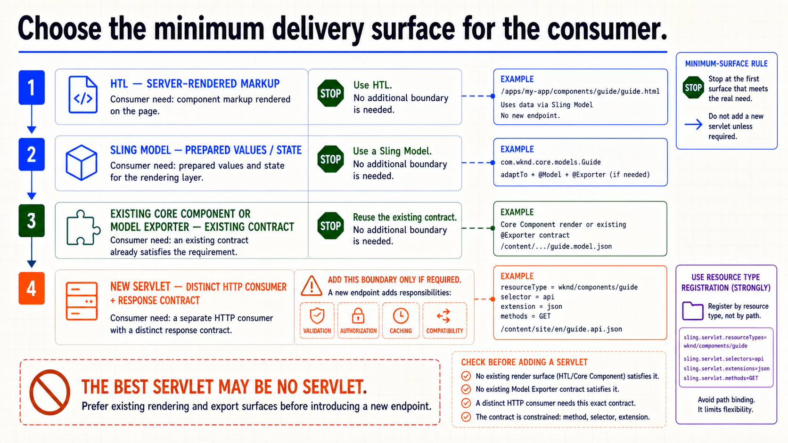
Detailed presenter notes
- Markup: stop at HTL when the consumer needs server-rendered component HTML.
- View data: use a Sling Model for prepared values and explicit state.
- Existing contract: inspect Core Component and Model Exporter surfaces before adding code.
- Servlet: accept its validation, authorization, caching and compatibility work only for a distinct HTTP contract.
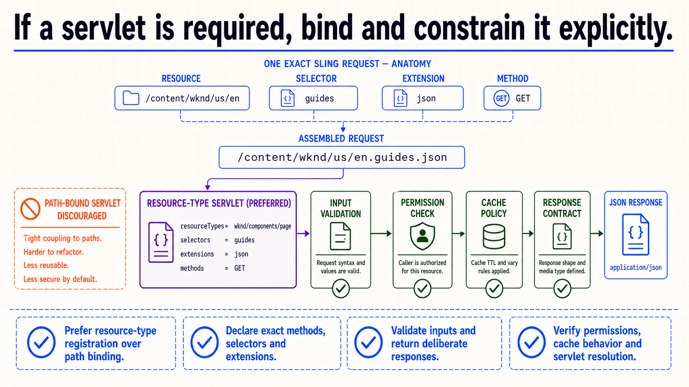
Detailed presenter notes
- Selection: decompose resource path, selector, extension and method.
- Registration: prefer a resource-type servlet over a path-bound endpoint.
- Constraint: declare only the request shapes and methods the consumer needs.
- Operation: validate input, permissions, cache policy, response type and status codes.
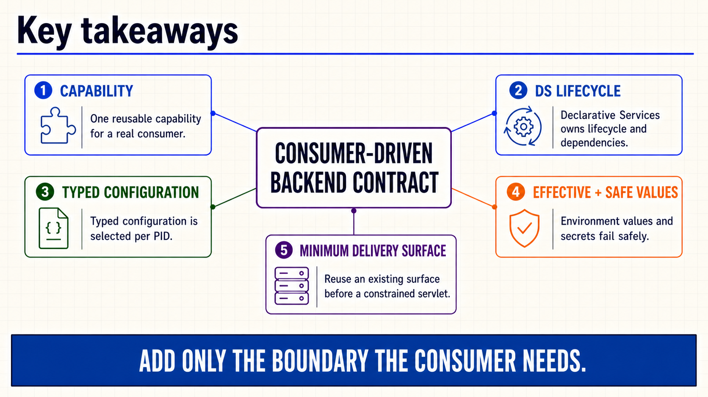
Detailed presenter notes
- Capability: create one reusable service for a real consumer.
- Runtime: let DS own lifecycle and required service references.
- Configuration: use one typed, effective and safely supplied PID contract.
- Surface: reuse rendering or export behavior before adding a constrained servlet.
Detailed presenter notes
- Close: leave the slide open for questions from the group.
- Boundary: do not introduce another prompt, recap or exercise.
Guide URL service practice
- Name one reusable Guide URL capability and the two consumers that justify a service.
- Define typed configuration for an enabled flag and base URL; add a secret placeholder only if the capability genuinely needs a credential.
- Provide complete local Author configuration and document which values would vary in dev, stage or prod.
- Inspect the effective PID and component state without exposing secret values.
- Compare HTL, Sling Model, existing
.model.json and servlet options for one named consumer.
Acceptance: the service owns one reusable capability; typed configuration has deliberate defaults and validation; environment values and secrets are classified safely; missing or invalid input produces an explicit state; evidence names the PID and runtime tier; the delivery decision names its consumer, response contract, permissions and cache behavior.
Official reading
{kind=link}
{kind=link}
{kind=link}
{kind=link}
{kind=link}
{kind=link}
{kind=link}
{kind=link}
{kind=link}
{kind=link}
{kind=link}
{kind=link}